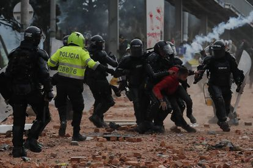

La República
SOCIEDAD
Agresión a transeuntes en el barrio Montecillos del distrito de Pataz

Un testigo que presenció la agresión sufrida el pasado mes de octubre por guardias civiles -dos de ellos
resultaron heridos- del cuartel de Dos Hermanas, ubicado en la barriada de Los Montecillos, aseguró este
viernes que el día de los hechos "muchas personas" del citado barrio participaron en los disturbios, aunque
no logró identificar a ninguno de
los tres acusados actualmente en prisión por los presuntos delitos de atentado, lesiones, amenazas,
tentativa de asesinato y desórdenes públicos. En este sentido, fuentes del caso informaron de que el Juzgado
de Instrucción número 6 de Dos
Hermanas citó este viernes a declarar en calidad de testigos a cuatro personas, aunque finalmente sólo
prestó declaración una debido a defectos de forma en la citación. Así, las fuentes consultadas precisaron
que este viernes prestó
declaración una persona que el día de los hechos, el pasado 10 de octubre, se encontraba invitado en el
cuartel de la Benemérita de la localidad
nazare
Diario expresión 22/11/1994